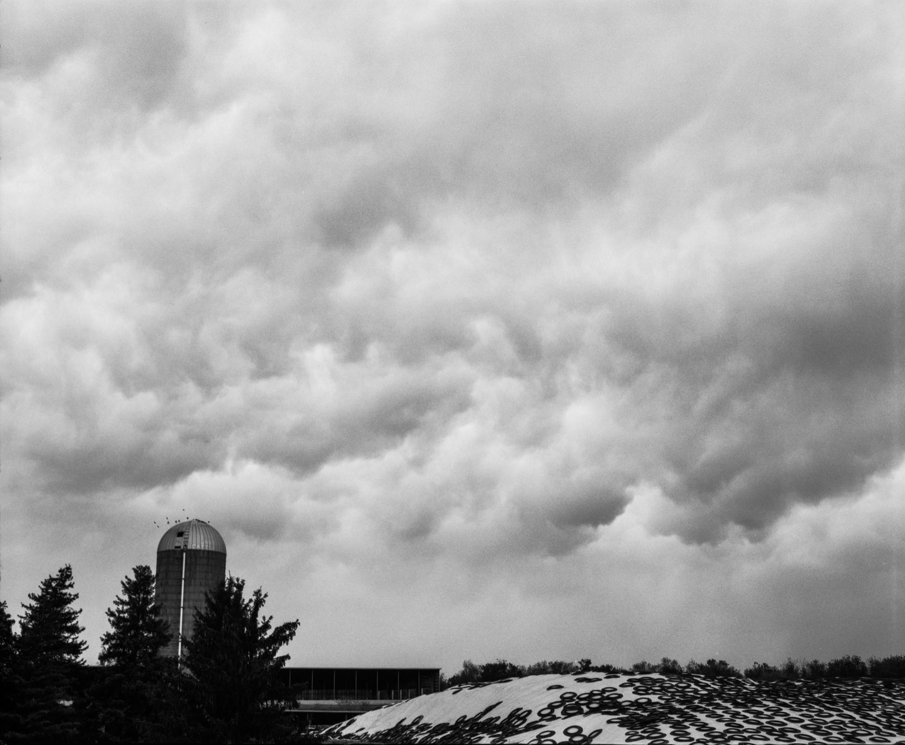
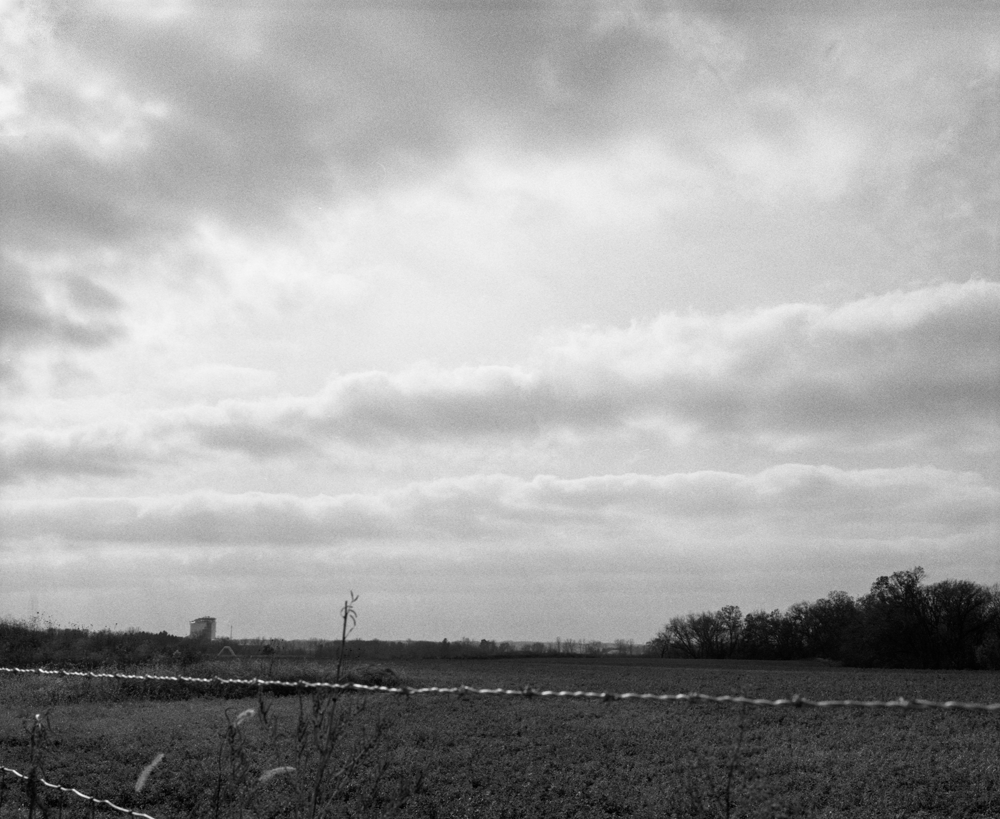
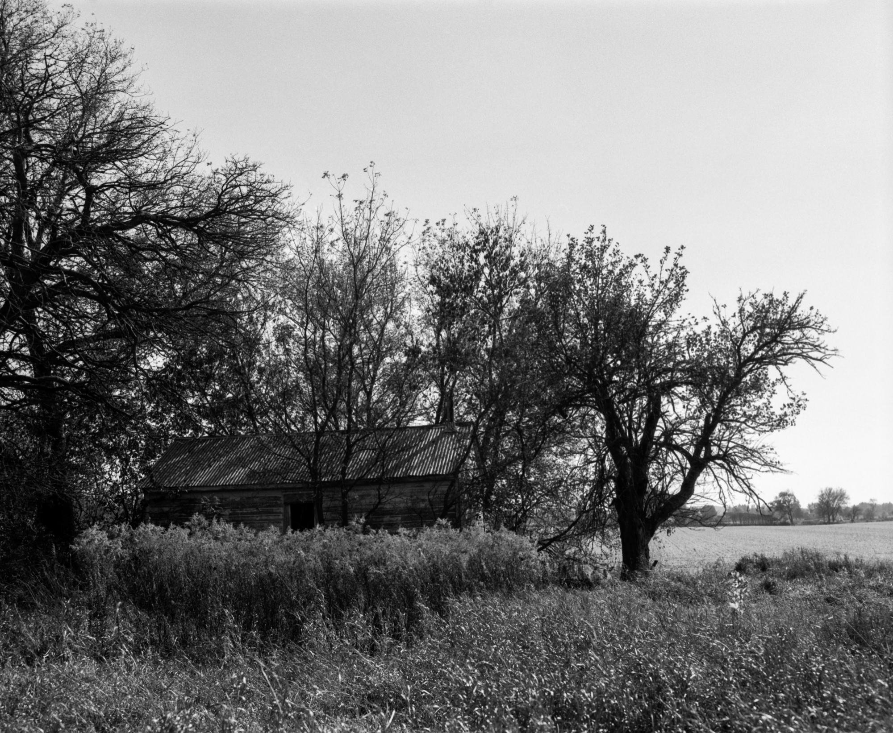

[IN PROGRESS]
Midwest, 120 & 4x5 film, 2022-present.
In Midwest, I explore the landscapes of the American Midwest. Inspired by the people, culture, and rural areas of the Midwest, my goal is to capture the essence of a region I've called home throughout my entire life. My lifelong connection to the Midwest imbues this project with a sense of intimacy and authenticity.
Through this work I hope to share not only images of the Midwest's beauty and character, but a profound connection to a place I proudly call home.